Korea University
M.S. Candidate, Department of Mobility Science and Engineering미래모빌리티학과 석사과정
Field Robot Lab, Advisor: Assoc. Prof. Youngeun Song필드로봇연구실, 지도교수: 송영은 부교수
M.S. student - Field Robot Lab 석사과정 - 필드로봇연구실
Department of Mobility Science and Engineering, Korea University 고려대학교 미래모빌리티학과
I study simulation-driven robot design and control for wheeled-legged robots, mobile manipulators, and indoor autonomous mobile robots. My current work builds Isaac Sim/Isaac Lab/RSL-RL validation environments for stair-climbing wheel design, arm-swing-assisted launch acceleration, and rack-level shelf transfer. Wheeled-legged robot, mobile manipulation, 실내 AMR을 대상으로 메커니즘 설계와 시뮬레이션 기반 제어 검증을 연구하고 있습니다. 최근에는 Isaac Sim/Isaac Lab/RSL-RL 환경에서 계단 등반 휠 설계, arm-swing 기반 launch acceleration, rack-level shelf transfer를 검증하고 있습니다.
Research연구 분야
Updates업데이트
Research output연구 성과
Electronics, 2025
Contribution: scheduling logic and elevator-selection performance analysis for indoor delivery robot path planning. 기여: 실내 배송 로봇 경로 계획을 위한 스케줄링 로직 제작 및 엘리베이터 선택 성능 분석.
DOISensors, 2025
Contribution: LiDAR-based human detection and Kalman-filter tracking modules for indoor AMR operation. 기여: 실내 AMR 운용을 위한 LiDAR 기반 사람 감지 및 Kalman filter 추적 모듈 구현.
DOIAdvanced Engineering Informatics, revised manuscript under review
Designed the T-shaped pedal wheel, CEBO-based optimization study, and simulation experiment automation. T-shaped pedal wheel 설계, CEBO 기반 최적화 연구, 시뮬레이션 실험 자동화를 수행.
IEEE/ASME AIM 2026, accepted
Proposed the arm-swing launch concept and validated the Unitree Go2W-OpenArm setup in Isaac Lab. Arm-swing launch concept을 제안하고 Unitree Go2W-OpenArm 구성을 Isaac Lab에서 검증.
IEEE/ASME AIM 2026, accepted
Contributed to platform design, Isaac Lab reinforcement-learning setup, and shelf-transfer experiments. 플랫폼 설계, Isaac Lab 강화학습 환경 구성, shelf-transfer 실험에 기여.
IEEE CASE 2026, under review
Contributed to reinforcement-learning formulation, delivery-robot system implementation, and training-result analysis. 강화학습 문제 구성, 배송 로봇 시스템 구현, 학습 결과 분석에 기여.
Academic activity학술 활동
A Study on Deriving a TDP for Evaluating Autonomous Work and Autonomous Driving Functions of Road-Sweeping Vehicles.노면 청소차의 자율작업 및 자율주행을 위한 기능 시험 평가를 위한 TDP 도출에 관한 연구.
Human Trajectory Prediction Algorithm.Human Trajectory Prediction Algorithm.
A Study on a DQN Reinforcement-Learning-Based Optimal Loading Algorithm for Hub Logistics Centers for Fulfillment and Last-Mile Delivery.풀필먼트 및 라스트마일을 위한 거점 물류센터의 DQN 강화학습 기반 최적 적재 알고리즘에 관한 연구.
A Study on Fail-Safety of an Autonomous Cleaning Vehicle.자율주행 청소차량의 fail-safety에 대한 연구.
A Study on PointCloud-Based Object Detection for Safe Autonomous Navigation of Robots in Confined Indoor Environments.협소한 실내 환경에서 로봇의 안전한 자율주행을 위한 PointCloud 기반 객체 탐지 방법에 대한 연구.
A Study on Lightweight LiDAR Perception Modules for Durability and Power Efficiency in Embedded Systems.임베디드 시스템에서의 내구성 및 전력 효율 향상을 위한 LiDAR 인식 모듈 경량화에 관한 연구.
Comparative Study on Deep-Learning-Based Object Detection Algorithms Using Aerial Images.항공 영상을 이용한 딥러닝 기반 객체 탐지 알고리즘 성능 비교 연구.
Optimum Driving Algorithm to Correspond with Various Outdoor Environment.Optimum Driving Algorithm to Correspond with Various Outdoor Environment.
Optimal Logistics Distribution Algorithm for Autonomous Delivery for Local Logistics Hub System.Optimal Logistics Distribution Algorithm for Autonomous Delivery for Local Logistics Hub System.
Works프로젝트
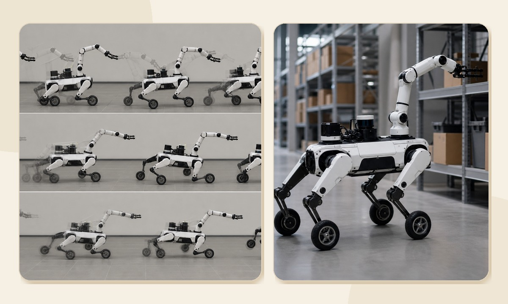
Arm-swing launch acceleration for a Unitree Go2W-OpenArm wheeled-legged platform. Evaluated in Isaac Lab/RSL-RL with launch-onset metrics. Unitree Go2W-OpenArm 기반 wheeled-legged platform에 arm-swing launch acceleration 개념을 적용했습니다. Isaac Lab/RSL-RL에서 launch-onset 기준 지표로 검증했습니다.
15.1% velocity gain초기 속도 누적 15.1% 개선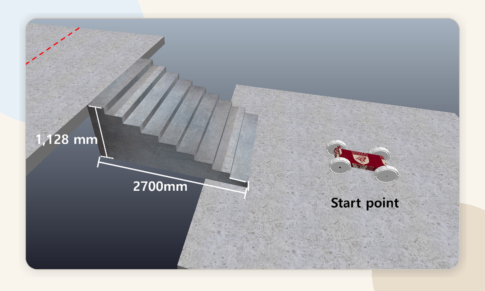
Six-variable T-pedal wheel design optimization for a stair-climbing robot. Benchmarked CEBO from 2D to 12D, then applied it to Isaac simulation experiments. 계단 등반 로봇을 위한 6변수 T-pedal wheel 설계 최적화 연구입니다. 2D-12D benchmark 검증 후 Isaac 시뮬레이션 실험에 CEBO를 적용했습니다.
23.31% faster traversal주행 시간 23.31% 단축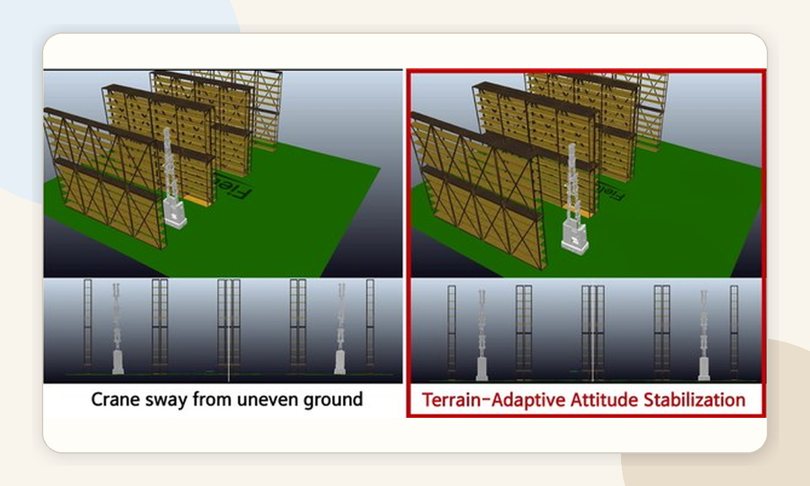
Migrated a CoppeliaSim setup to Isaac Lab. Trained torque-sensitive suspension stabilization for a high-altitude inventory-inspection robot. CoppeliaSim 기반 환경을 Isaac Lab으로 이전했습니다. 고소 작업 재고조사 로봇을 대상으로 토크 감응식 suspension 안정화 정책을 학습했습니다.
Physical robot application stage실제 로봇 적용 단계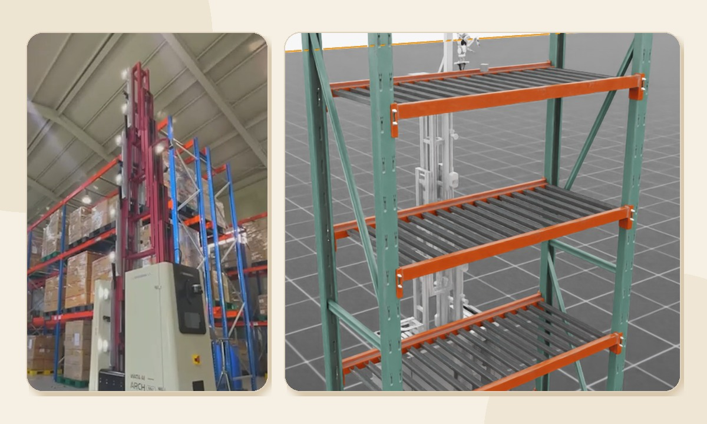
Designed a lift-equipped mobile manipulator platform for multi-level rack environments. Configured Isaac Lab reinforcement-learning experiments for shelf transfer. 다층 랙 환경을 위한 lift-equipped mobile manipulator 플랫폼 설계에 참여했습니다. Shelf transfer를 위한 Isaac Lab 강화학습 실험 환경을 구성했습니다.
AIM 2026 acceptedAIM 2026 채택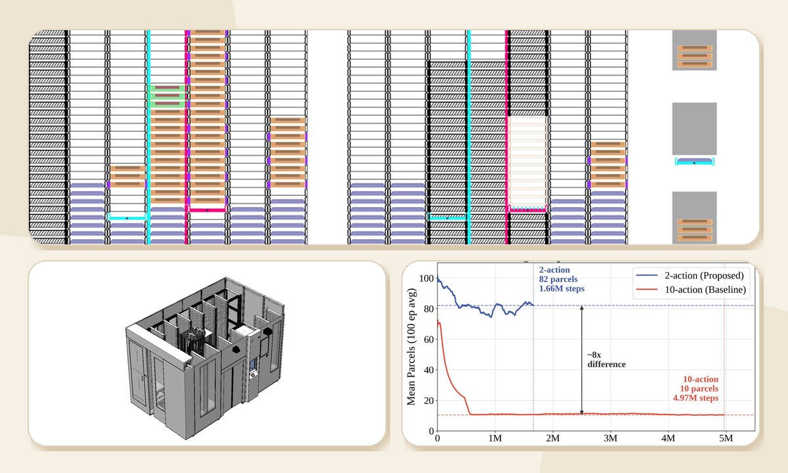
Contributed to a local delivery robot system using reinforcement learning. The binary handler-selection formulation achieved an average of 82 parcels per episode after 1.66M training steps. 강화학습 기반 지역 배송 로봇 시스템 연구에 참여했습니다. Binary handler-selection formulation은 1.66M training steps 이후 episode당 평균 82개 parcel 처리 성능을 보였습니다.
IEEE CASE 2026 under reviewIEEE CASE 2026 심사 중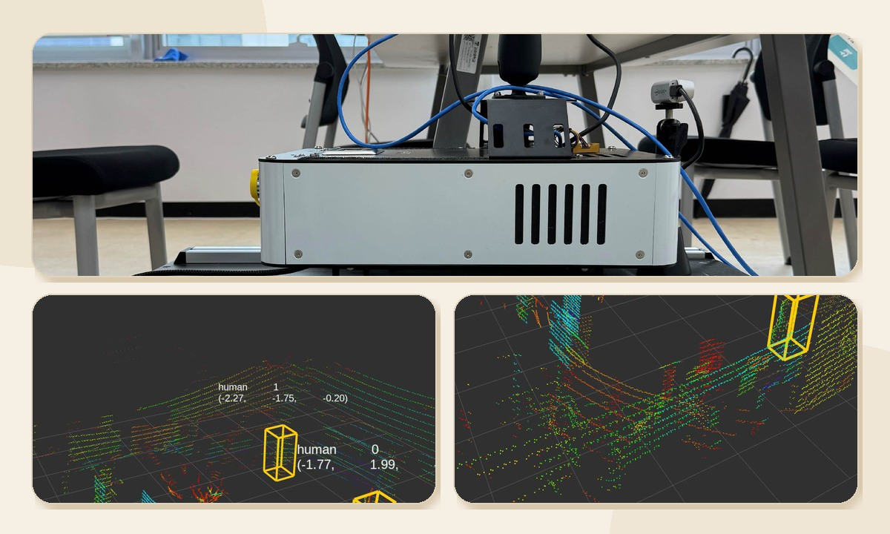
Built a Ranger Mini v2 campus parcel-delivery robot. Integrated ROS, Autoware, LiDAR-only SLAM, DBSCAN, and YOLO-based avoidance. Ranger Mini v2 기반 교내 택배 운송 로봇을 제작했습니다. ROS, Autoware, LiDAR-only SLAM, DBSCAN, YOLO 기반 회피 로직을 통합했습니다.
Grand Prize, Project Semester고려대학교 프로젝트학기 대상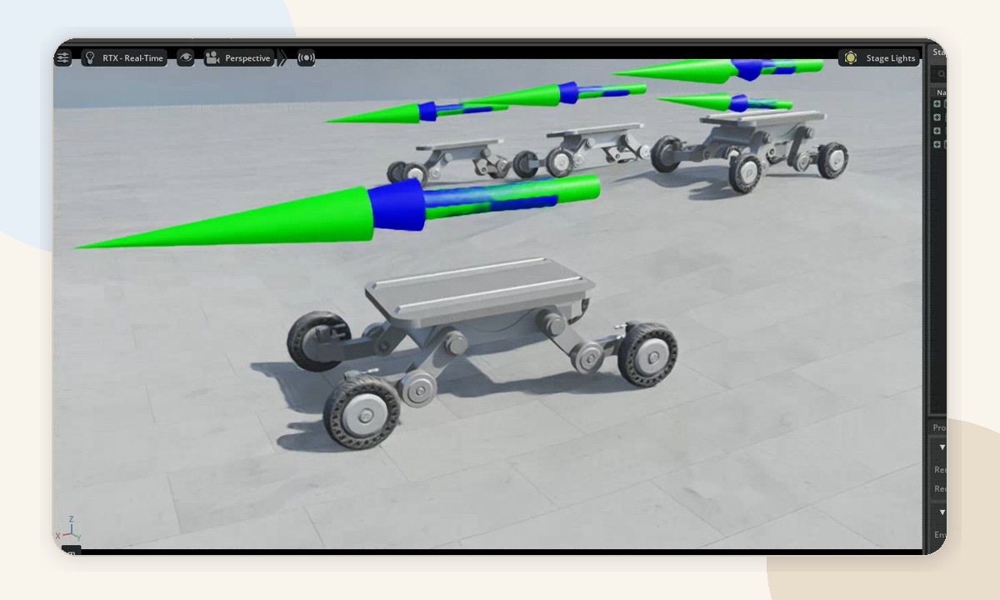
Built an Isaac Lab simulation environment for a 20-DOF wheeled-legged AMR with steering joints. Evaluated upper-platform stabilization before fabrication. 조향 조인트가 포함된 20-DOF wheeled-legged AMR의 Isaac Lab 시뮬레이션 환경을 구축했습니다. 제작 전 상판 안정화 알고리즘을 검증했습니다.
KETI-linked validationKETI 연계 검증 과제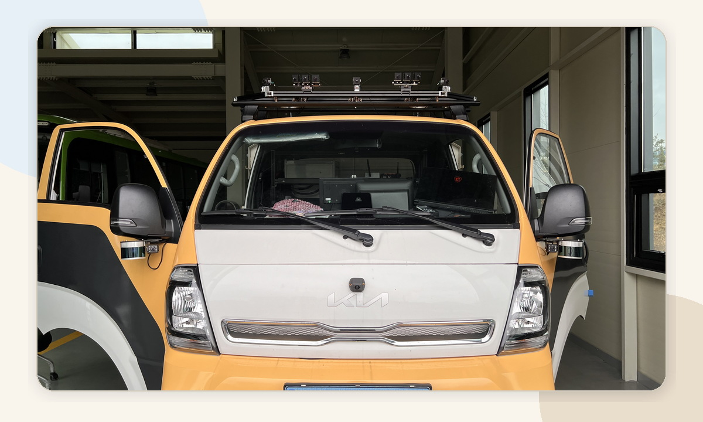
Structured campus test routes, four difficulty-level driving scenarios, and 10 TDP validation items for cloud-linked autonomous electric road-sweeping vehicles. 클라우드 연계형 자율주행 전기식 노면청소차를 대상으로 교내 실차 테스트 경로, 4단계 주행 시나리오, 10개 TDP 검증 항목을 구조화했습니다.
Test scenario design실차 검증 시나리오 설계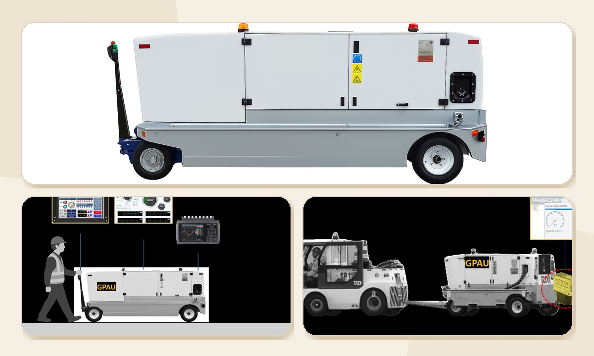
Implemented and validated autonomous and remote towing concepts in Isaac Sim, including LiDAR-based collision avoidance and joystick-assisted semi-autonomous driving. Isaac Sim에서 자율/원격 견인 시스템 구조를 구현했습니다. LiDAR 기반 충돌 방지와 조이스틱 기반 반자율 주행 보조 기능을 검증했습니다.
Feasibility validation타당성 검증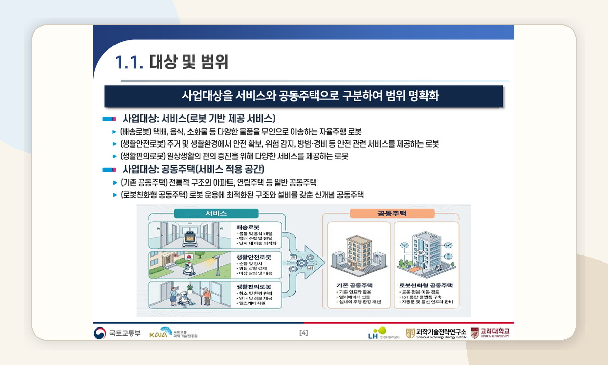
Planned testbed structure, service scenarios, regulatory review, and technical validation methods for mobile and walking robots in residential environments. 공동주택 내 모바일 로봇 및 보행 로봇 테스트베드를 대상으로 구조, 서비스 시나리오, 법령 검토, 기술 성능 검증 방법을 기획했습니다.
Residential robot testbed공동주택 로봇 테스트베드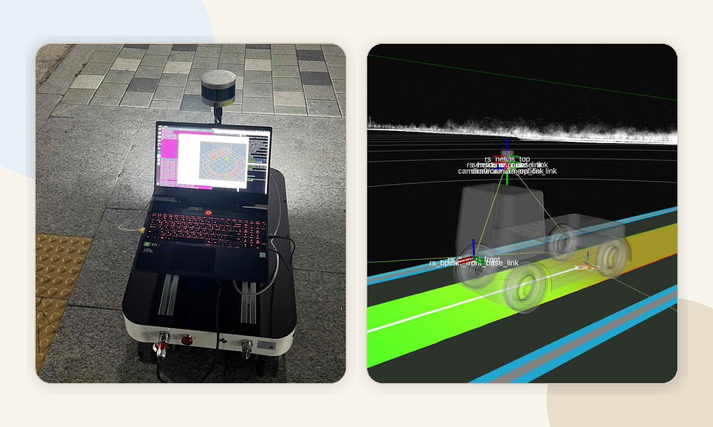
Built a ROS-based 1/5-scale vehicle, implemented LiDAR obstacle detection and camera lane recognition, and supported ODD and route-risk analysis for autonomous shuttle planning. ROS 기반 1/5-scale vehicle을 구축하고 LiDAR 장애물 감지, 카메라 차선 인식을 구현했습니다. 자율주행 셔틀 기획을 위한 ODD 및 경로 위험 요소 분석도 수행했습니다.
Undergraduate research foundation학부 연구 기반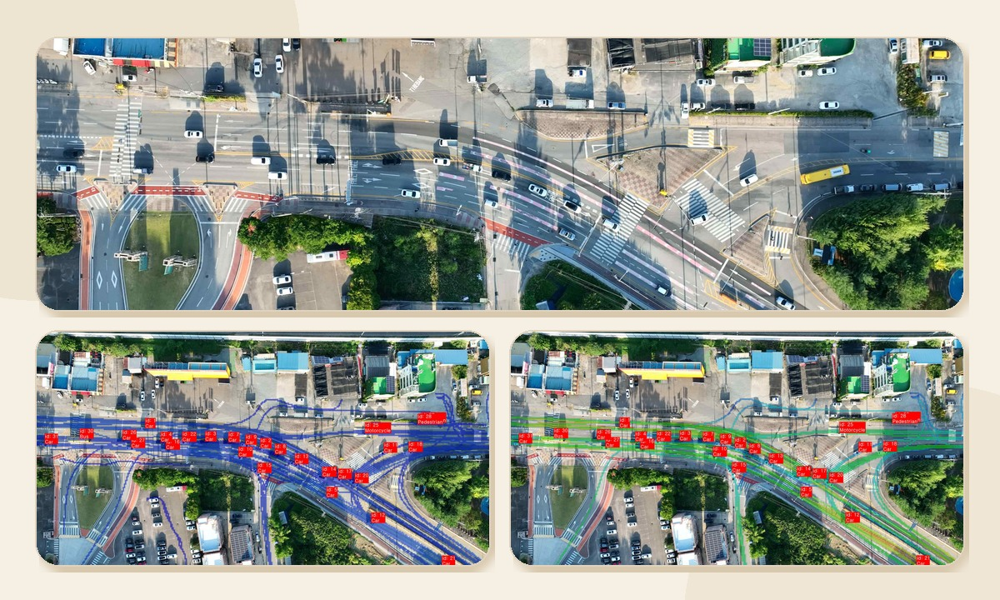
Collected traffic-flow data using 10 drones across 6 intersections over 5 days. Performed trajectory analysis and OD-matrix generation using DataFromSky. 10대 드론으로 6개 교차로의 교통 흐름 데이터를 5일간 수집했습니다. DataFromSky 기반 trajectory 분석과 OD-matrix 생성을 수행했습니다.
10 drones / 6 intersections드론 10대 / 교차로 6개Background배경
M.S. Candidate, Department of Mobility Science and Engineering미래모빌리티학과 석사과정
Field Robot Lab, Advisor: Assoc. Prof. Youngeun Song필드로봇연구실, 지도교수: 송영은 부교수
B.S., Department of Mobility Science and Engineering미래모빌리티학과 학사
Recognition성과
Tools기술
Robot software / simulation ROS, Autoware, Isaac Sim, Isaac Lab, CoppeliaSim, Ansys, CAD
Perception / navigation LiDAR, SLAM, OpenCV, YOLO, DBSCAN, Kalman Filter
Learning / systems PyTorch, RL, Bayesian Optimization, RSL-RL, Python, C++, Linux, CUDA, Git